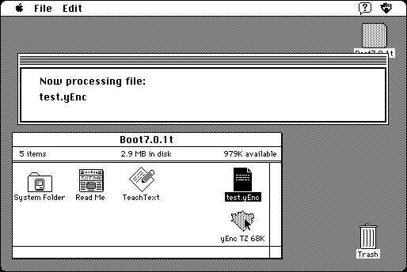

Download
yenctz68k.zip (94K) yEnc TZ 68K 1.13 repackaged into a zipped hfs disk image and checksum file. The disk image can be mounted with Mini vMac.
yenctz68k.sit.hqx (123K) yEnc TZ 68K 1.13 in the original format.
copyright: David Phillip Oster
mod date: Apr 10, 2004
license: freeware
from url :
yEnc TZ
Decodes “yEnc encoded files, such as are used on usenet newsgroups.” Requires System 7. Source code is available (below).

Download Source
yenctzsrc.zip (147K) yEnc TZ source repackaged into a zipped hfs disk image and checksum file. The disk image can be mounted with Mini vMac.
yenctzsrc.sit.hqx (180K) yEnc TZ source in the original format.
If you find these downloads useful, please consider helping the Gryphel Project, which hosts them.
Here are the md5 checksums for the downloads, signed with Gryphel Key 5:
--------- GRY SIGNED TEXT --------- 7a49022b44791e2d3b54b5e2a1d34cd5 yenctz68k.zip dd503e8d55a10f94594962fb4ab8ac78 yenctz68k.sit.hqx cfa8a2ef7ef8b68e9e98d3b41d793a47 yenctzsrc.zip 8242d1f2da4051b5b32d871bd63b63e3 yenctzsrc.sit.hqx ------- BEGIN GRY SIGNATURE ------- Gry/4Xa8CFcUzxdN/DzLpnjlONeDJv/xQxvK9iU3crxx49Buii2kJW4fAdtHyaee NUFC+nq11uxfvwWyD3kxiDwsoy/wiCW1IypG4kETeaQURf/mGDXPyESTjxJoIa3d 2AHBWISUkr8l8887bTj+SJyfQ8htr2iaNfixcwPykVwqWvYEM6r5QuoGBGAZchE9 -------- END GRY SIGNATURE --------